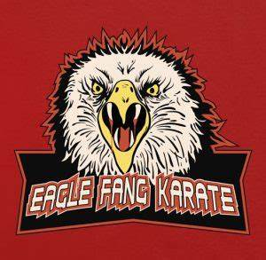

Eagle Fang
El Dojo Eagle Fang, liderado por Johnny Lawrence en "Cobra Kai", representa una mezcla de filosofías de karate. Johnny combina elementos agresivos del Cobra Kai con principios de autocontrol y respeto del Miyagi-Do. Este enfoque híbrido es una respuesta a la rivalidad entre los dojos Miyagi-Do y Cobra Kai. Los estudiantes de Eagle Fang a menudo luchan por encontrar un equilibrio entre la agresión y la redención, lo que crea un conflicto interesante en la trama de la serie.
Integrantes
Miguel Díaz: Miguel ayudó a fundar Eagle Fang Karate además, el actual Campeón de Karate de All Valley, pero aún no se ha recuperado completamente de sus lesiones, por lo que el jurado está deliberando si aún puede ser el luchador que era y defender su campeonato en la temporada 4.
Mitch: fue expulsado de Cobra Kai por Kreese por no ser lo suficientemente duro. Terminó uniéndose a Eagle Fang Karate, lo que finalmente lo pone de nuevo del lado de su mejor amigo y compañero fan de la WWE, Chris.
Bert(Owen Morgan): joven, rubio y con gafas, Bert era un Cobra Kai dedicado a quien Kreese, sin embargo, expulsó porque no quería alimentar a su mascota serpiente con un ratón. El pequeño se unió a Eagle Fang Karate, por lo que ahora ha vuelto a entrenar con su sensei original, Johnny, y se ha reunido con su antiguo mejor amigo Nathaniel.
Raymond Stingrayera el alumno más antiguo de Cobra Kai que tampoco estaba en la temporada 3, e incluso ahora tiene prohibido estar cerca de niños. Sin embargo, decide unirse al dojo de Eagle Fang
Logo del Dojo
Fundador del Dojo